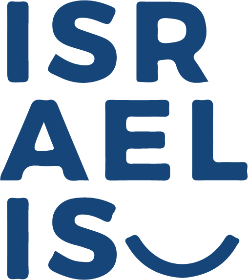

צוות קריאייטיב עמותת ישראליז - מבוא
חברותיי לכיתה: חן חלפון, יובל גולדשטיין, קטי מצליח, ליטל לביא ואני מתנדבות
בתור צוות קריאייטיב וקידום מכירות בעמותת ישראליז .
עמותה זו פועלת למען חיזוק התדמית החיובית של ישראל בעולם,
דרך עידוד ויצירת מפגשים אנושיים ואיכותיים, בין מטיילים צעירים ישראלים ומטיילים צעירים מרחבי העולם.
במסגרת ההתנדבות יצרנו מגבת חוף המשמשת גם כמשחק שאלות הכרה בין אנשים המתיישבים עליה.
עיצובה נעשה על ידי באמצעות תוכנת האיילוסטרייטור.
המגבת שיצרנו נשלחה לייצור וכרגע משמשת שליחים מטעם העמותה הנמצאים ברחבי העולם.

מגבת חוף
המגבת נוצרה בצורת עיגול בכדי שהיושבים בה ישבו עם פניהם למרכז כך שיוכלו לראות ולדבר אחד עם השני. במרכז המגבת ישנה שמש ומסביבה שאלות היכרות, כאשר ניתן לסובב בקבוק במרכז השמש אשר יצביע על השאלה שעליה ישיבו.